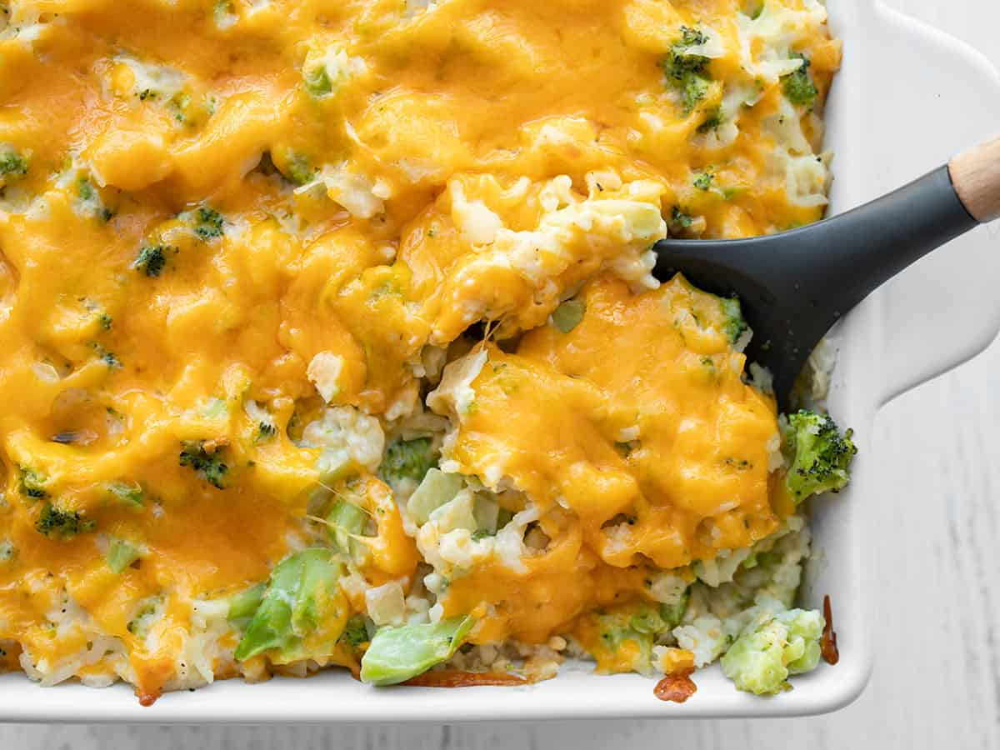

Easy Broccoli Casserole

Description
This easy broccoli casserole is pure comfort food! Great for family get-togethers, holidays, potlucks, or when you are in the mood for a delicious home-cooked dish!
Fresh broccoli combined with cream of mushroom soup, cheddar cheese, Ritz crackers, and seasoned perfectly. It’s no wonder why this flavorful, creamy, and cheesy dish is a family favorite. Serve it as a side or make it the star of any meal.
Ingredients
- 6 heaping cups broccoli florets
- 1 10.6 ounce can cream of mushroom soup
- 1/2 cup sour cream
- 1 large egg, beaten
- 1/4 cup heavy cream
- 1/4 teaspoon onion powder
- 1/4 teaspoon parsley flakes
- 1/4 teaspoon garlic powder
- 1/4 teaspoon smoked paprika
- 1/2 teaspoon salt
- 1/2 teaspoon black pepper
- 2 1/2 cups shredded cheddar cheese, divided
- 1 sleeve Ritz crackers, crushed
- 6 tablespoons unsalted butter, melted
Steps
- Preheat the oven to 375°F.
- Cook the broccoli just until it turns a bright green in color - you can boil or steam the broccoli, but it should take just a few minutes - you do not want the broccoli cooking all the way through. Drain, rinse with cold water, and squeeze all excess water from the broccoli with a dishtowel.
- Stir together soup, sour cream, egg, cream, herbs and spices, and 2 cups of the cheese.
- Mix in broccoli.
- Spread the mixture into a buttered 9x9 square baking dish.
- Sprinkle the remaining 1/2 cup of cheddar cheese over the top.
- Layer the crushed crackers over the cheese.
- Drizzle the melted butter over the crackers, covering as much area as you can.
- Bake the casserole for approximately 30-35 minutes, until the casserole is bubbling and golden brown across the top - you may need to cover the casserole with aluminum foil after the first 20 minutes so that it does not brown too much.